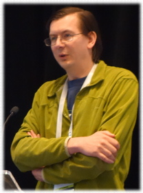

Filesystem management interfaces
In a filesystem-only session at LSFMM 2017, Steven Whitehouse wanted to discuss an interface for filesystem management. There is currently no interface for administrators and others to receive events of interest from filesystems (and their underlying storage devices), though two have been proposed over the years. Whitehouse wanted to describe the need for such an interface and see if progress could be made on adding something to the kernel.

Events like ENOSPC (out of space) for thin-provisioned volumes or various kinds of disk errors need to get to the attention of administrators. There are two existing proposals for an interface for filesystems to report these events to user space. Both use netlink sockets, which is a reasonable interface for these kinds of notifications, he said.
Lukas Czerner posted one back in 2011, while Beata Michalska proposed another in 2015. The latter is too detailed, Whitehouse said, and has some performance issues. It notifies on events like changes to the block allocation in the filesystem, which is overkill for the kind of monitoring he is looking for.
The interface needs to provide a way to enumerate the superblocks of filesystems that are mounted on the system. Applications would register their interest in particular mounts and get notification messages from them. The messages would consist of two parts, a key that identified the kind of event being reported along with a set of messages with further information about the event.
The messages would have a unique ID to identify the mount, which would consist of a device number (either the real one or one that was synthesized by the subsystem), supplemented with a UUID and/or volume label. Some kind of generation number might also be needed to distinguish between different mounts of the same filesystem.
Steve French asked which filesystems can provide a UUID; network filesystems can do so easily, but what about others? Ted Ts'o said that all server-class filesystems have a way to generate a UUID. He also said that the device number would be useful to help correlate device errors. Trond Myklebust suggested that the information returned by /proc/self/mountinfo might be enough to uniquely identify mounts.
Ts'o said that this management interface is really only needed for servers, since what Whitehouse is looking for is a realtime alarm that some attention needs to be paid to a volume. That might be because it is thin-provisioned and is running out of space or because it has encountered disk errors of some sort.
There was some discussion of how management applications might filter the messages so that they only process those of interest. Ts'o said that filtering based on device, message severity, filesystem type, and others would probably be needed. There was general agreement for the need for this kind of interface, though it was not clear what the next step would be.
| Index entries for this article | |
|---|---|
| Kernel | Filesystems |
| Conference | Storage, Filesystem, and Memory-Management Summit/2017 |